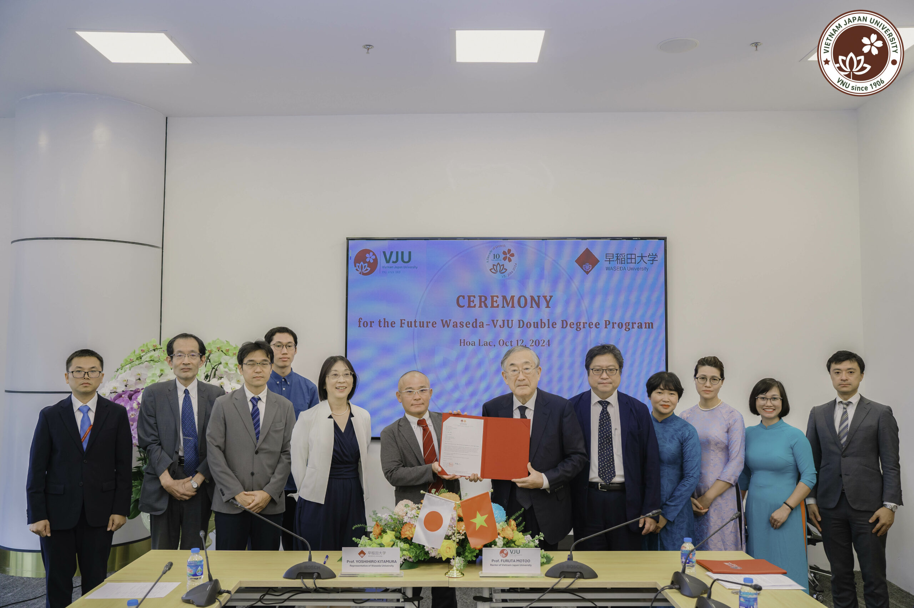

Các chương trình cử nhân và kỹ sư của VJU dành cho thí sinh năm 2026. Thí sinh theo dõi thông báo, hồ sơ và lịch tuyển sinh trên cổng tuyển sinh chính thức.
Trường Đại học Việt Nhật là trường thành viên của Đại học Quốc gia Hà Nội, được thành lập từ ý tưởng hợp tác giáo dục giữa Việt Nam và Nhật Bản.
VJU phát triển theo định hướng đại học nghiên cứu, tập trung vào công nghệ kỹ thuật tiên tiến và khoa học liên ngành nhằm đóng góp cho phát triển bền vững.
Các không gian học tập, nghiên cứu và sinh hoạt tại cơ sở Mỹ Đình và Hòa Lạc.
Cùng kiến tạo môi trường học thuật và hợp tác quốc tế giữa Việt Nam và Nhật Bản.
Trường Đại học Việt Nhật là trường thành viên của Đại học Quốc gia Hà Nội, được thành lập từ ý tưởng hợp tác giáo dục giữa Việt Nam và Nhật Bản.
Phát triển năng lực trong kỹ thuật và công nghệ hiện đại.
VJU phát triển theo định hướng đại học nghiên cứu, tập trung vào công nghệ kỹ thuật tiên tiến và khoa học liên ngành.
Kết nối tri thức để giải quyết các thách thức thực tiễn.
VJU tập trung nghiên cứu liên ngành, công nghệ tiên tiến và các giải pháp cho những thách thức xã hội.
VJU kết nối người học, giảng viên, nhà nghiên cứu và đối tác để cùng tạo ra những ý tưởng có giá trị cho xã hội.
Môi trường học tập và trải nghiệm đa văn hóa dành cho sinh viên VJU.
